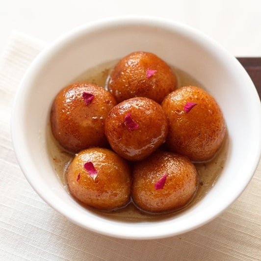

Gulab jamun

Gulab jamun is a sweet confectionary or dessert, originating in the Indian subcontinent and a
type of mithai popular in India, Pakistan, Nepal, the Maldives, and Bangladesh, as well as Myanmar.
Ingredients
- 1 cup dry milk powder
- 2 tablespoons all-purpose flour
- 1/2 tablespoons ghee (clarified butter), melted
- 1/2 teaspoon baking powder
- 1/2 cup warm milk
- 1 pinch ground cardamom
- 1 quart vegetable oil for deep frying
- 1/2 cups white sugar
- 7 fluid ounces water
- 1 teaspoon rose water
- 1 pinch ground cardamom
How to make gulab jamun ?
- In a large bowl, stir together the milk powder, flour, baking powder, and
cardamom. Stir in the almonds, pistachios and golden raisins. Mix in the melted
ghee, then pour in the milk, and continue to mix until well blended. Cover and
let rest for 20 minutes.
- In a large skillet, stir together the sugar, water, rose water and a pinch of
cardamom. Bring to a boil, and simmer for just a minute. Set aside.
-
Fill a large heavy skillet halfway with oil. Heat over medium heat for at least 5
minutes. Knead the dough, and form into about 20 small balls. Reduce the heat
of the oil to low, and fry the balls in one or two batches. After about 5 minutes,
they will start to float, and expand to twice their original size, but the color will
not change much. After the jamun float, increase the heat to medium, and turn
them frequently until light golden. Remove from the oil to paper towels using a
slotted spoon, and allow to cool. Drain on paper towels and allow to cool
slightly.
-
Place the balls into the skillet with the syrup. Simmer over medium heat for
about 5 minutes, squeezing them gently to soak up the syrup. Serve
immediately, or chill.